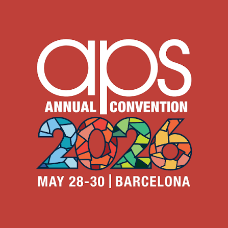
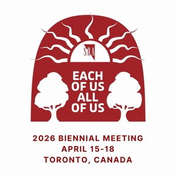
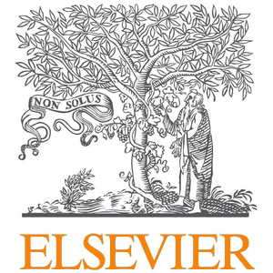

Recente activiteiten, aankondigingen en mijlpalen van het Digitale Jeugd Project.
Onze focusgroepstudie met 78 Nederlandse adolescenten is nu open access gepubliceerd in de Journal of Adolescence. Jongeren beschreven zowel de voordelen als de nadelen van hun digitale mediagebruik, en pleitten voor oplossingen die verder gaan dan individuele zelfbeheersing, samen met ouders, leeftijdsgenoten, scholen en platforms. Lees het artikel →
Onze focusgroepstudie werd gepresenteerd in een symposium op de 28e Biennial Meeting van de International Society for the Study of Behavioural Development (ISSBD) in Incheon, Zuid-Korea. Het congres is een van de grootste internationale bijeenkomsten over menselijke ontwikkeling.
Onze experimentele studie naar geseksualiseerde social media-inhoud en pornografie-gerelateerde begeerte werd gepresenteerd in een symposium op het congres van de Vereniging voor Nederlandse Ontwikkelings-Psychologie (VNOP) 2026 in Rotterdam. Het thema van dit jaar was hoe ontwikkelingswetenschap kan inspelen op maatschappelijke vragen zonder haar wetenschappelijke fundament te verliezen.
Op de APS Annual Convention 2026 in Barcelona presenteerden we met een poster voorlopige bevindingen uit onze experimentele studie naar geseksualiseerde social media-inhoud en pornografie-gerelateerde begeerte. Het was de eerste keer dat de Association for Psychological Science haar jaarlijkse congres buiten de Verenigde Staten hield.

We zoeken jongeren van 16 tot 21 jaar voor een tweeweekse smartphonestudie naar social mediagebruik en emotioneel welzijn, met korte vragenlijsten van ongeveer een minuut. Scholen, klinieken en jongerenorganisaties die willen helpen bij de werving, nodigen we van harte uit contact op te nemen.
Luka Todorović presenteerde een poster met eerste bevindingen uit onze focusgroepstudie op de tweejaarlijkse bijeenkomst van de Society for Research on Adolescence (SRA) in Toronto, een van de toonaangevende internationale bijeenkomsten van adolescentieonderzoekers. Helle Larsen woonde de bijeenkomst bij en organiseerde een symposium.

Het Digitale Jeugd Project ontving een beurs van €10.000 van het Amsterdams Universiteitsfonds. De beurs maakt onze tweeweekse smartphonestudie naar dagelijks social mediagebruik en emotioneel welzijn mogelijk, en we zijn dankbaar voor de steun.
Onze laboratoriumstudie naar ADHD-symptomen en problematisch digitaal mediagebruik bij jongvolwassenen is nu gepubliceerd in Addictive Behaviors. De studie onderzocht of inhibitiecontrole, beloningsgevoeligheid en tijdwaarneming verklaren waarom ADHD-symptomen samenhangen met problematisch social mediagebruik en gaming. Lees het artikel →

Onze tweejarige longitudinale studie met 645 Nederlandse adolescenten is nu open access beschikbaar in het Journal of Research on Adolescence. Het artikel gaat in op een centrale vraag in het veld, of emotionele problemen of problematisch gebruik eerst komen, en laat zien dat het antwoord verschilt tussen meisjes en jongens. Lees het artikel →
We presenteerden bevindingen over geestelijke gezondheid en problematisch digitaal mediagebruik bij adolescenten op dit internationale wetenschappelijke congres in Washington, DC. Het congres brengt toonaangevende onderzoekers samen op het snijvlak van technologie en jeugdontwikkeling.